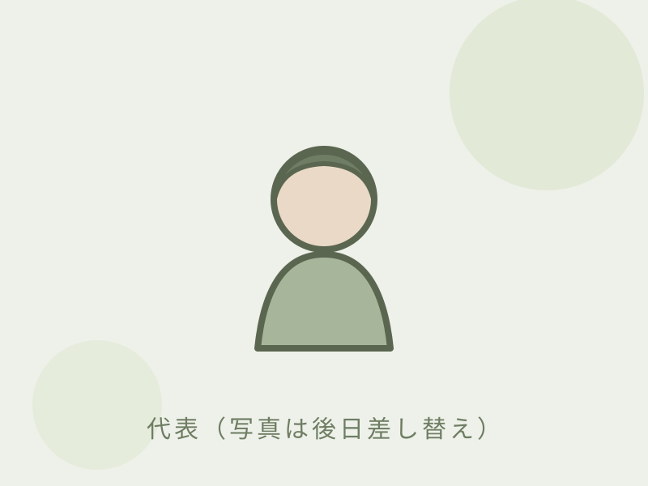

For You
相続・遺言のこと、
相続・遺言のこと、
こんなお悩みはありませんか？
Q.
遺言書を残したいけれど、何から始めれば？
Q.
相続の手続きが多すぎて手が回らない。
Q.
元気なうちに遺言を準備しておきたい。
わからなくて当然です。あなたのペースに合わせて、ひとつずつお手伝いします。
Services
取扱業務
相続・遺言のご相談に、専門家がていねいに対応します。
Our Strengths
選ばれる3つの理由
女性ならではの寄り添う対応
わかりやすい言葉で、最後まで親身に。デリケートな相談も安心です。
豊富な実績と確かな専門性
相続・遺言を専門に多数対応。確実に実現できる手続きをご提案します。
はじめての方も安心の明朗料金
初回相談は無料。料金は事前に明示し、ご納得のうえ着手します。
Flow
ご相談の流れ
1
お問い合わせ
お電話かフォームでご連絡ください。ご相談日時を調整します。
2
無料相談
状況やご希望をお伺いします。無理な勧誘はありません。
3
お見積り・ご契約
必要な手続きと費用を明示。ご納得のうえご契約いただきます。
4
手続きの実行
書類作成や各種手続きを代行。進捗を報告し、最後までサポートします。

REPRESENTATIVE
「最後の想い」を、
「最後の想い」を、
かたちにするお手伝いを。
代表 行政書士 高木 麻里（Mari Takagi）
相続や遺言には、ご家族への想いが込められています。手続きを「こなす」のではなく、おひとりの想いに耳を傾けることを大切にしています。
専門用語はできるだけ使わず、わかりやすく。「相談してよかった」と思っていただけるよう努めます。小さな疑問もお気軽に。
高木 麻里
Contact
まずは、お気軽にご相談ください
初回相談は無料。ご予約・ご相談は、お問い合わせフォームより承ります（お電話でのご予約は承っておりません）。
営業時間：平日 9:00〜18:00（土日は予約制）